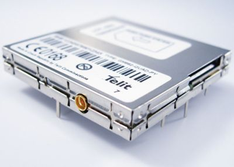
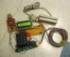

A weblog focused on interesting circuits, ideas, schematics and other information about microelectronics and microcontrollers.
E-books
Disclaimer
Because I have not tested all electronic circuits mentioned on this pages, I cannot attest to their accuracy; therefore, I do not provide a warranty of any kind and cannot be held responsible in any manner.
ATMEL AVR
TellyMate - A Serial-to-TV adapter
3. June 2009 - 17:47 — adminTellyMate is a VT-52 compatible terminal display device that takes data from a RS-232 and outputs text to a TV screen, developed by guys from Batsocks.
USB to Serial with ATUSB
2. June 2009 - 20:49 — adminBuild your own Benito - an USB to Serial device based on AT90USB162.

Interfacing Telit GM862 GPS module with an Arduino
25. May 2009 - 20:36 — adminTelit GM862 is a GPRS + GPS module with simple AT-based communication protocol. You can connect it to the Arduino in easy way.


NES emulation
9. May 2009 - 18:36 — adminA Nintendo NES emulator, built on ATMega644 - another Cornell project.
Noah Vawter's stuff
9. May 2009 - 7:18 — adminPython for ATMega and AVR 1-bit groove box by Noah Vawter.

Digital Receipts System
7. May 2009 - 5:51 — adminAn interesting crossover between hardware (MCU, card reader, display) and software (PHP web server) by Cornell University students.

Audio gesture recognition
7. May 2009 - 5:35 — adminA new MCU-based project from Cornell University. It utilizes a microphone placed in a stethoscope to recognize various gestures when a fingernail is dragged over a surface (an original idea, isn't it?).

CONTR-and-BASIC
2. May 2009 - 6:27 — adminSimple AVR modules, programmabled in BASIC, from the Russia.

AVR8 Burn-o-mat
15. April 2009 - 20:04 — adminA GUI (Graphic user interface) for avrdude programmer.